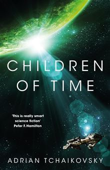

Children of Time
- Read on 2023-02-10
- Rating: ️️️️️
- Format: 🎧 (16 hours 31 minutes)
I really enjoyed this. It's science-fiction through and through - and it feels like a while since I've read anything of the sort. The people of earth travel to distant planets, assisted by sleep suspension, thousands of years, and the desire to pass on humanity, even if sometimes humanity is the human version we know of now.
The development of the story is well done, as the author tells the story from two developing societies in parallel, reviewing their political issues, societal wins, technological advancements, and interpersonal relationships.
I agree with another review I read of this book - it would be interesting to discuss this book, and some of the questions it raises with others in something like a book club.
- Prior: The Great Gatsby
- Next: Tomorrow, and Tomorrow, and Tomorrow